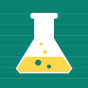

Middle School Projects
Study labs built for the phone. Open one in Safari, then tap Share → Add to Home Screen for full screen.
Science

Science Lab6th grade · Scientific Method
Study labs built for the phone. Open one in Safari, then tap Share → Add to Home Screen for full screen.
